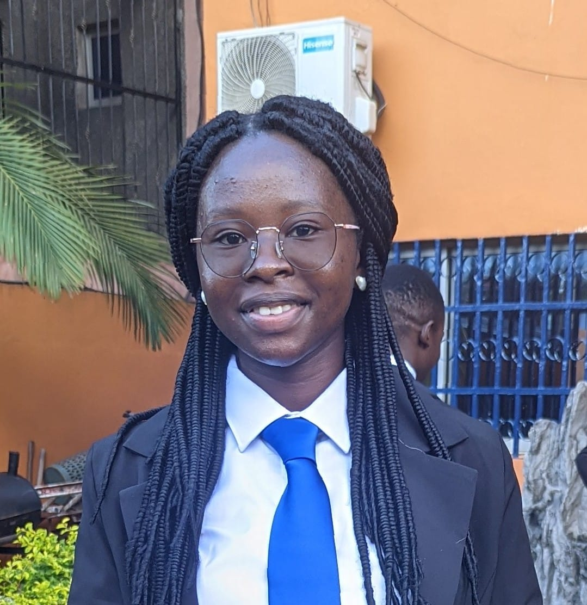
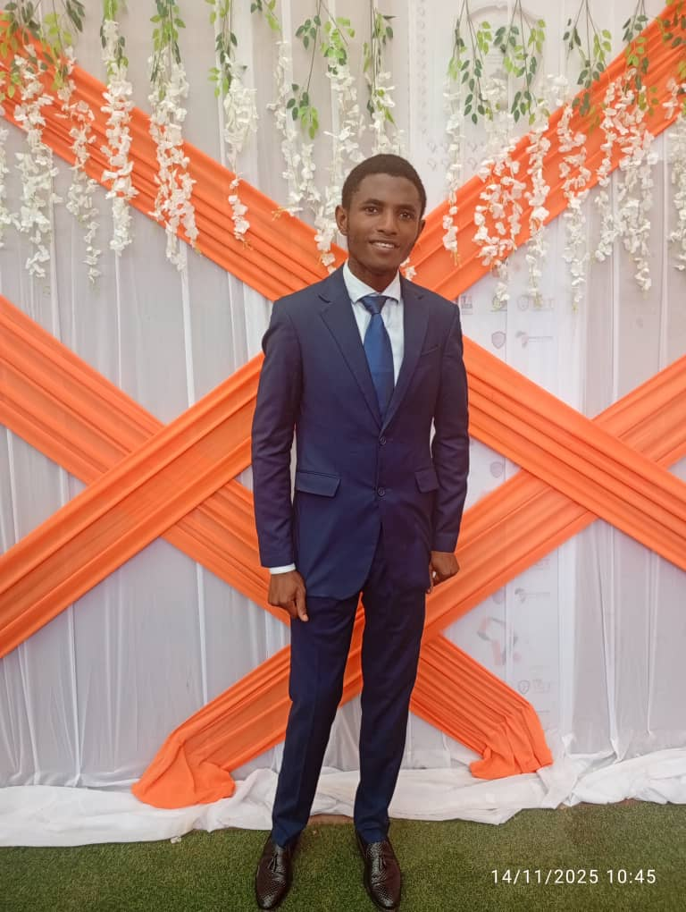
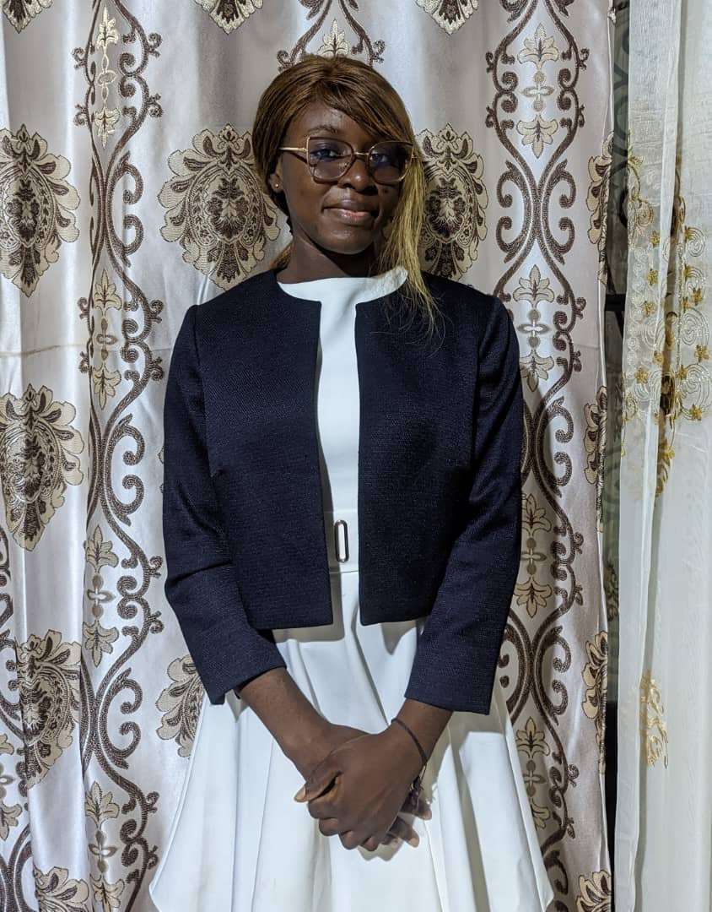
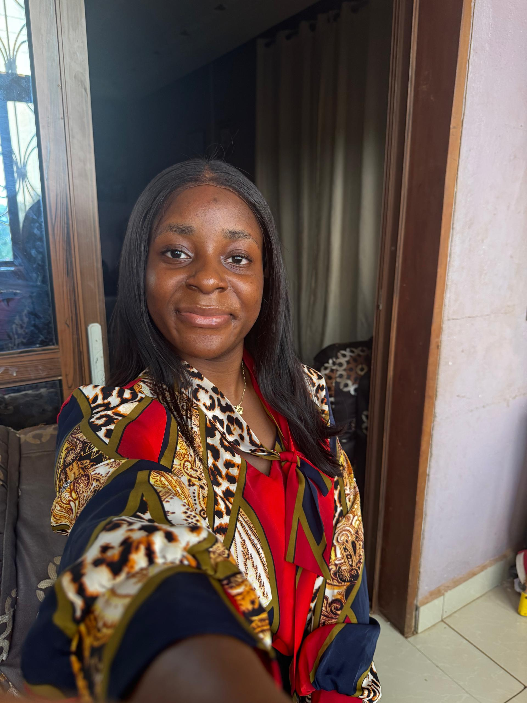

We are a scrum team of five highly cross-functional software engineering students developing a Hospital Management System to enhance hospital efficiency, improve patient care, and digitize medical operations using modern software engineering principles. The motto of our system is, "Speedy care and recovery above any other thing." The purpose of this project is not only to build a functional software system, but also to demonstrate our understanding of real-world healthcare problems and how software engineering can be used to solve them. This About Us section highlights the team behind the system, defines our roles, and reflects our responsibility toward delivering a reliable and efficient hospital management system.

Scrum Master/Team Developer
Tezanou Uriah lead project planning, coordination, and monitored development progress. She ensured Agile pratices were properly followed throughout development. She resolved team conflicts and removed obstacles that may have affected team. She also worked in developing the frontend, backend and database.

Product owner/Team Developer
Fouda Mvondo was both the Product Owner and a Team Developer. This member ensured the interest of the customer was defended by working closely with the development team clarifying requirements and reviewing system functionalities to ensure the final product aligned with the real-world healthcare objectives. He was also the Database Administrator.
CTO/Team Developer
Tsoplefack Gastinelle served both as the CTO and a Team Developer. As Chief Technology Officer of the project, she defined technical architectures of the system and made technical decisions. She oversaw the development of the system, ensured system security and performance, and also guided development team in the use of appropriate technologies.

CFO/Team Developer
Chilla Nicole served as both the Chief Financial Officer (CFO) and a Team Developer this project. She managed project budgeting, resource allocation, and cost planning while actively contributing to system development. She worked as the frontend leader and supported the implementation of core features.

Team Developer
Awa Beri served as a Software Developer on the Hospital Management System project. She contributed across multiple areas of the system, including frontend, backend and database development. She worked on implementing core features, integrating system components, and supporting overall functionality to ensure the application operates smoothly and efficiently.